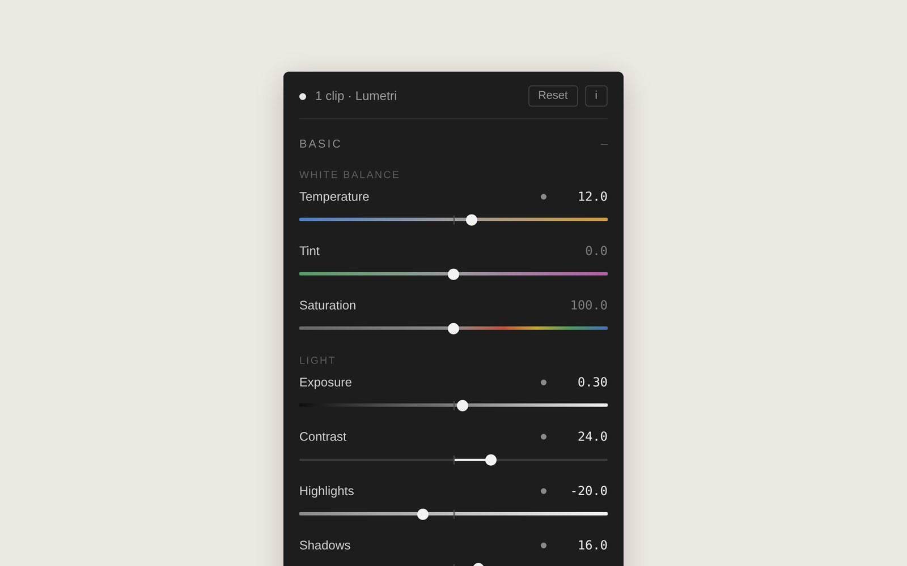

04 — Premiere Pro plugin
Tonal
Proper sliders for Premiere Pro’s classic Lumetri Color.

What it does
The latest Premiere Pro moves colour grading into a new Color tab. The classic Lumetri Color effect is still there to drag onto a clip, but its only controls are rows of raw numbers.
Tonal is a docked panel that puts sliders back on it: white balance, light, creative and vignette. It edits the Lumetri Color effect already on your clips, so Premiere’s own engine still does the grading. Select several clips and one move changes them all. Keyframes work like Effect Controls: once a setting is keyframed, a move sets a keyframe at the playhead.
Grade with real knobs, too. Plug in a MIDI controller such as a Behringer X-Touch Mini, click Learn beside a slider, and turn a knob. Buttons can undo, redo, reset and add keyframes, and the controller’s LED rings follow your grade from clip to clip.
Install
(04)- 01DownloadGet the .ccx file using the button above.
- 02InstallQuit Premiere, then double-click the file. Creative Cloud asks you to confirm. It warns you to only install plugins from sources you trust.
- 03OpenIn Premiere, choose Window → UXP Plugins → Tonal, then dock the panel wherever suits you.
- 04UpdateWhen a new version is out, a notice appears in the panel. Download it and double-click the new file to replace the old one.
MIDI controllers
(03)- 01Get the BridgePremiere plugins can’t talk to MIDI devices, so a small menu-bar app, Tonal Bridge, does it for them. Download it using the second button above. Mac only.
- 02Open itUnzip it and drag Tonal Bridge into Applications. The first time, right-click it and choose Open. It isn’t from the App Store, so macOS asks you to confirm, or to allow it under System Settings → Privacy & Security.
- 03Map your controlsIn Tonal, click MIDI, then Learn beside a slider and turn a knob. Press a button instead to make it reset that slider. Tonal remembers your mappings.